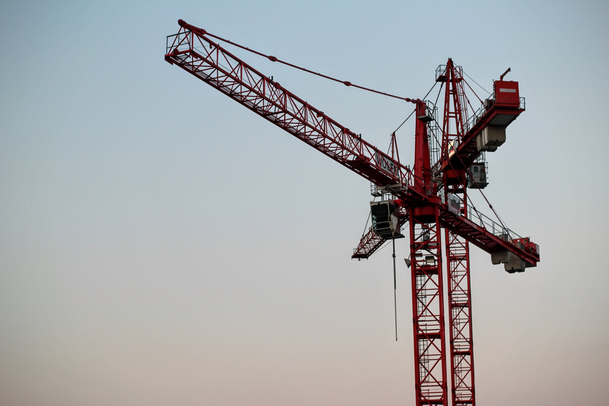

Hem Tjänster
kontakta oss
Våra Tjänster

LYFTKRAN |
Våra lyftkranar erbjuder imponerande lyftkapacitet och mångsidighet för både byggplatser och industriella projekt. Från montering av stålstrukturer till att flytta tunga maskiner, våra lyftkranar levererar prestanda och pålitlighet oavsett dina lyftbehov. |

LASTBILAR |
Våra lastbilar är mångsidiga, med olika storlekar och lastkapaciteter för att passa dina specifika krav. Oavsett om det är för att leverera material till din byggplats eller för att transportera varor över långa avstånd, kan våra lastbilar möta dina behov på ett effektivt och pålitligt sätt. |
GRÄVSKOPA |
Våra grävskopor är oumbärliga på din byggplats. Med olika storlekar och utföranden kan våra grävskopor anpassas för olika grävarbeten, från mindre utgrävningar till större jordflyttningar. Oavsett projektets omfattning kan våra grävskopor hjälpa dig att få jobbet gjort på ett effektivt och professionellt sätt. |